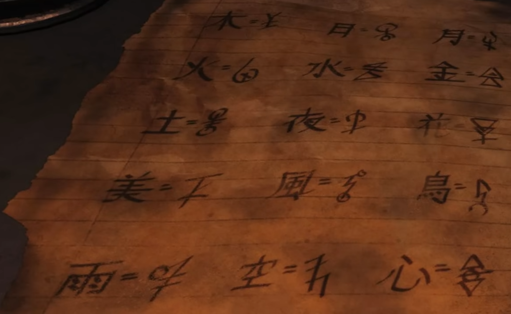

Round 5 - Fazer pedra de magia matando os Gritadores
Rodas Cifradas
Partes
Posição 1 - Andar inferior da casa principal - Mesa
Posição 2 - Local de escavação em frente a Pack a Paunch
Posição 3 - Cabana do "Doctor's Quarters"
Juntando a Pedra e Cifrando
Juntas as três Rodas Cifradas na Pedra dos Gritadores
Anotar os três símbolos
Posição 1 - Casa principal andar inferior - Atirar em livro na mesa para revelar
Posição 2 - Mesa de sucatas ao lado do Pack a Paunch
Posiçào 3 - Fundo da sala de comunicações
Cifrar conforme abaixo

Introduzir sequência cifradra na Pedra
Para saber se deu certo pedras em volta ficarão vermelhas
A partir daqui precisa da DG2 para continuar o EasterEgg principal
Recomendado ter Pack a Paunch na DG2 para continuar
Interagir com as pedras acesas em volta da Pedra Mágica com a Cifras e concluir o desafio
O número de pedras acesas é equivalente a o número de jogadores
Para inciar todos os jogadores precisam ativar as pedra em sincronia
Matar com a DG 2 os zumbis com brilho azul em volta da pedra central
Você tem exatamente 2 minutos para alimetar a pedra
Uma tentativa por Round
São em torno de 15 a 20 zumbis azuis mortos com a DG 2 para completar
Matar zumbis na trap Flogger (principal a giratória no andar de baixo próxima ao Jug)
Encher a fonte de perk vazia próxima
Quando concluido você pode beber o sangue da fonte
Durante o efeito do sangue (passo anterior) você vai até o segundo andar da casa e procura por um orb voador. interagir com o orb e seguir o mesmo para pegar a peça
Ao fim o orb te leva a uma peça
Se o efeito do sangue acabar beba novamente pare ver o orb
Beber sangue novamente e pegar mais um item
Procurar mapa na casa princupal e procurar pelo X vermelho
ir até o local e pegar o item
este item brilha em azul
Atirar no item caso esteja flutuando
Ir na área de escavação (perto do Pack a Paunch) e interagir com o altar central para liberar o orbs azuis
Interagir em simultâneo com os orbs
Cada jogador deve seguir seu orb e ir atirando nele até ele retornar pra posição de spawn do orb
Os orbs vão para lugares aletórios
Normalmente ficam em spots para serem acertados fora do mapa
Preste atenção para não peder os orbs
Boss Fight
Interagir com o orb azul quando estiver pronto
1 - Matar zumbis de brilo azul com DG2 em volta do altar
2 - Atrair boss pra dentro do circulo azul e dar dano nela
Na conclusão se spawnar 4 drops deu certo, se spawnar apenas MaxAmmo refazer
3 - Matar zumbis explosivos azuis com a DG 2 próximo ao altar
4 - Matar zumbis azuis com minigun usando a DG2 próximo ao altar e depois matar o Boss
Na conclusão se spawnar 4 drops deu certo, se spawnar apenas MaxAmmo refazer
Interagir com o Orb e concluir o EasterEgg
Montagem da DG2
A partir do round 10 a DG2 passa vir na caixa
Peças
Peça 1 - Cano - Cabana do Pescador - Peça em cima da pratileira a direita da porta
Peça 2 - Fusível elétrico - Fundo da Sala de Comunicação em cima da mesa após o perk
Colocar essa peça na máquina em frente a Sala de Comunicação e defender objetivo
Pegar essa peça de volta
Um novo item aparecerá dentro da Cabana do Pescador, em um rádio
Ir ao depósito, ativar a trap na casa ao fundo e eperar ela abrir. Pegar o fusível e ligar de novo até completar
Para saber se esse passo foi concluido, na mesa ao lado (onde é montada a DG2) aparecerá um fusível de pé energizado
Eperar round 15 para começar a aperecer a Feiticeira e fazer o próximo passo
Levar a Zabala (feiticeira) para energizar a máquina no andar de baixo da casa principal - Pegar Válvula - item nessa máquina quando acabar